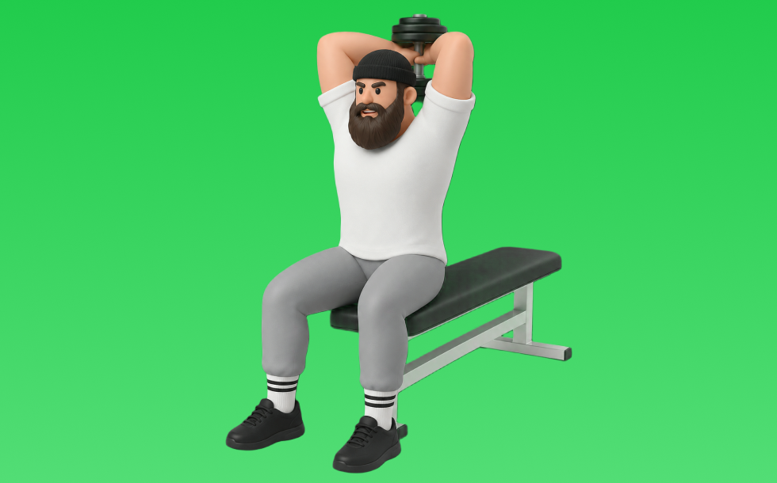

ダンベルオーバーヘッドトライセプスエクステンション

ダンベルオーバーヘッドトライセプスエクステンションとは、ダンベルを使って頭上で「肘を伸ばす」動作で腕（上腕三頭筋）を鍛える種目です。長頭を狙いやすいのが特徴で、肘を開きすぎずに頭の後ろへ下ろし、押し上げる動作を繰り返します。二の腕の厚みづくりやプレス系の補強が期待できます。
- 対象部位
- 腕
- 器具
- ダンベル
- 記録形式
- 重量・回数
- 別名
- フレンチプレス / フレンチ / ダンベルフレンチプレス / トライセプスフレンチプレス / ダンベルオーバーヘッドエクステンション / french press / db french press / dumbbell french press / dumbbell overhead triceps extension
YouTube動画
-
【ダンベル】上腕三頭筋を効果的に鍛えるトライセプスエクステンションのやり方！フォームのポイントやバリエーション等を徹底解説
-
【横川尚隆３】上腕三頭筋が一番デカくなる種目＆ポイント徹底解説です。
-
【ダンベルプルオーバー】絶対にやるべき3つの理由とフォーム解説
-
【実演解説】三頭筋の動画はこれが最後です。今後はもう撮りません。
-
【腕トレ】ダンベルで腕を太くする上腕三頭筋を鍛える筋トレメニュー
-
トライセプスエクステンションの効果的なやり方
-
【初心者向け】トライセプスエクステンションの正しいフォーム
-
『オーバーヘッドトライセプスエクステンションのやり方』腕を太くするには欠かせない！上腕三頭筋(特に長頭)に効かせる腕トレです◎
-
上腕三頭筋のトレーニング ｜ ダンベル・トライセプスエクステンション
-
三頭筋の筋肥大に最も良い種目は？【上腕三頭筋のティアリスト】
-
【筋トレ】上腕三頭筋を鍛えるポイントとは
-
ケーブルで上腕三頭筋(長頭)を鍛える！『オーバーヘッドケーブルトライセプスエクステンション』の正しいやり方を解説します◎
-
【腕トレ】三頭筋に強烈なストレッチがかかる種目！【ケーブルオーバーヘッドトライセプスエクステンション】
YouTubeショート
-
ダンベルオーバーヘッドエクステンション
-
正しいフレンチプレスのやり方 | ボディビル日本チャンピオンが解説 #shorts 【ビーレジェンド プロテイン】
-
これ知ってる人は筋トレガチ勢💪🥺#フレンチプレス #腕トレ #筋トレ #フィットネス #ワークアウト
-
上腕三頭筋をデカくしたいならこの種目がオススメ💪 #筋トレ #筋肉 #トレーニング
-
正しいライイングトライセプスエクステンションのやり方 #フィットネス #筋トレ
-
腕を鬼太くする筋トレ！オーバーヘッドエクステンションの方法！How to triceps biggerwith dumbell overhead extention! #shorts #筋トレ
-
ダンベルトライセプスエクステンション（Dumbbell Triceps Extension）のやり方と基本フォーム
-
横川尚隆 腕トレ(三頭筋)オーバーヘッドトライセプスエクステンション【切り抜き】#shorts
-
みなさんはライイングエクステンションどのようにされてますか？？今回は持田選手がライイングエクステンションを伝授！次はどの種目の解説をやってほしいかコメントしてね！ #volix #ちょこっと惜しい
-
三頭トレ おすすめ 種目【第1位】オーバーヘッドエクステンション #shorts #筋トレ #腕トレ #三頭筋
-
ケーブルエクステションの正しい位置
-
【ダンベル】極太の腕を作る最強三頭筋トレーニング4選！ #shorts
-
先生! 腕が太くなるおすすめの種目は？ ＃Shorts #助けて山本先生 ＃筋トレ大学
-
上腕三頭筋を最大限鍛える方法【筋トレ】
-
オーバーヘッドダンベルエクステンション
-
ダンベルトライセプスエクステンション
-
オーバーヘッド トライセプスエクステンション 26kg 3/7法
-
#腕トレ#上腕三頭筋#ダンベル#オーバーヘッドダンベルエクステンション#三頭筋トレーニング
-
本気でやんなきゃ、、、 #筋肥大 #三頭筋 #サム切り抜き #samgetitright #筋トレ #フィットネス #ボディビル #ジム #筋肉 #ジョージ #メンズコーチ #兄弟
-
【ダンベル】腕トレ４選 #筋肉
-
こんなライイングエクステンションはやめろ！正しいフォーム解説 #筋トレ
-
腕のやり方🔥〜ケーブルプレスダウン基礎編〜 #筋トレ #筋肉 #筋肉社長 #腕トレ
-
三頭筋をデカくする必須種目【フレンチプレス】
-
正しいライイングエクステンションのやり方
-
急成長した腕トレ！ #Shorts
-
【筋トレ初心者必見 ! | フレンチプレスのやり方】日本人初ミスター・オリンピアに出場した、山岸プロが解説！ #山岸秀匡 #筋トレ初心者 #フレンチプレス 横バージョンはコメ欄から!
-
それ二の腕痩せ出来ません！正しい二の腕を細くする方法をマスターしましょう！#ダイエット
-
本当に正しいライイングエクステンションのやり方
-
【ダンベル】肩トレ3選 #筋トレ
-
#shorts 【オーバーヘッドエクステンション】アラフィフの腕トレ！
-
三頭筋にバチバチ効くフレンチプレスのやり方！
-
腕が成長しないダンベルキックバック #筋トレ
-
【腕トレ解説】インクライン・オーバーヘッド・トライセプス エクステンション #筋トレ解説 #腕トレ #三頭筋
-
【腕回り45cm超えた筋トレ方法】#Shorts
動作方法
- 肘を固定し、肩の力みを減らす
- 狙う部位で押し切る
- 可動域を保って戻す
動作ポイント
- 肘を開きすぎない
- 肩をすくめない
ワンポイントアドバイス
- 肘の位置を固定すると狙った部位に効きやすい
- 回数を急がず、下ろし動作を丁寧に行う
目的別回数設定
目的や体力に応じた一般的な目安です。無理のない範囲で調整してください。
- 筋力アップ
- 1〜5回
- 筋肥大
- 6〜12回
- 持久力アップ
- 13〜20回
YouTube動画について
動画はYouTubeの公開情報をもとに表示しています。内容は投稿者によるもので、Biggrによる監修ではありません。
アプリを入手
筋トレやトレーニングの記録はBiggrにお任せください。今すぐ無料で使い始められます。